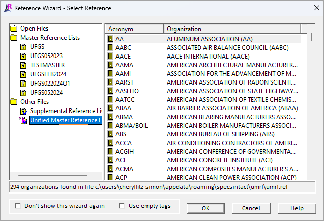

This command can also be executed from the SI Editor's Tagsbar.
The Reference WizardThe Reference Wizard is an automated Tool for inserting and managing Reference Publications is a tool designed to automate the insertion of References within the Reference ArticleAn Article within Part 1 that contains a list of the Publishing Organizations and the titles of all technical references used in the section text and SectionA set of files within the Division of a Master or Job that covers specific aspects of construction text by using a specific family of tagsSpecsIntact relies on tags to control content, and formatting, automate processes, and generate reports. These special markers, like <SEC> and </SEC>, define elements and attributes within the specifications. Some tags, like <Page />, function independently. In essence, tags are the building blocks of SpecsIntact documents to identify the Reference-related elements.

In the Reference Wizard, you can choose References from any Reference Lists available on your system. By default, the Reference Wizard automatically chooses the Unified Master Reference List (UMRL)A list of all referenced standards cited in the Unified Facilities Guide Specifications (UFGS) Master. It is used to generate Reference Articles when performing Master text processing functions. The UMRL is also used by the SI Explorers Reference Wizard and Reference Checking features. Available Reference Lists are shown on the left, while Reference Acronyms, Organizations, Reference Identifiers (RID), and Titles are displayed on the right.
 The Reference Identifiers are sorted and displayed in alphanumeric order.
The Reference Identifiers are sorted and displayed in alphanumeric order.
Features
 The Check Reference feature will run automatically when you add a Reference (REF) or Reference Identifier (RID) within the Reference Article, or when an RID is added to the body of the Section, outside the Reference Article.
The Check Reference feature will run automatically when you add a Reference (REF) or Reference Identifier (RID) within the Reference Article, or when an RID is added to the body of the Section, outside the Reference Article.
- Don't show this wizard again - Disables the Reference Wizard. Selecting this option will also automatically select the Use empty tags function. To reactivate the Reference Wizard, check the box for Use Reference Wizard for inserting Reference tags on the Tools menu > Options > References tab.
- Use empty tags - Will insert a blank set of tags instead of a selection from the window.
How To Use This Feature
 To Insert a new Reference Publication within the Reference Article:
To Insert a new Reference Publication within the Reference Article:
- In the SI Editor, locate the Reference Article (1.x REFERENCES)
- Place your cursor to the left of the beginning REF tag, where the New Reference Publication would be listed alphabetically
- Click the REF button on the SI Editor's Tagsbar to launch the Reference Wizard. By default, the Unified Master Reference List will be displayed
- Locate and select the appropriate Reference Organization. To easily navigate, place your cursor on an Acronym and begin to type or use the scroll bar
- Double-click on the Reference Acronym or Reference Organization
- Once the list of Reference Identifiers (RID) and Titles appears, do one of the following:
- Either double-click on a single Reference Identifier (RID)
- Use the Ctrl key to select multiple non-consecutive selections
- Use the Shift key to select multiple consecutive selections
- Click OK
When you choose to add a Reference (REF), the Reference Organization (ORG), Reference Identifier (RID), and Reference Title (RTL) will be included. When adding a new Reference Organization or Reference Identifier (RID) to the Reference Article, the SI Editor will inform you that the Reference has not been added to the text of the Section. If the Reference does not appear outside of the Reference Article, the Reference will be removed from the Reference Article during processing.
To Insert a Reference Identifier to an existing Reference Publication within the Reference Article:
- In the SI Editor, locate the Reference Article (1.x REFERENCES)
- Place your cursor to the left of the beginning RID tag where the new Reference Identifier would fall alphabetically under the Reference Organization
- Click the RID button on the SI Editor's Tagsbar to launch the Reference Wizard. By default, the Reference Wizard will display the Reference Identifiers (RID) and Titles for that Reference Organization
- From the Reference Wizard, do one of the following:
- Either double-click on a single Reference Identifier (RID)
- Use the Ctrl key to select multiple non-consecutive selections
- Use the Shift key to select multiple consecutive selections
- Click OK
Additional Learning Tools
 Watch all of the References eLearning modules within Chapter 3 - Editing.
Watch all of the References eLearning modules within Chapter 3 - Editing.
Users are encouraged to visit the SpecsIntact Website's Support & Help Center for access to all of our User Tools, including Web-Based Help (containing Troubleshooting, Frequently Asked Questions (FAQs), Technical Notes, and Known Problems), eLearning Modules (video tutorials), and printable Guides.